CURATED COLLECTION
硬碟
HDD、SSD、M2
一、什麼是硬碟？
硬碟是電腦重要的資料儲存設備（Storage Device），主要負責保存作業系統、應用程式、文件、照片、影片、遊戲及其他資料。
與記憶體（RAM）不同，硬碟屬於非揮發性儲存裝置，即使電腦關閉電源，裡面的資料通常仍然會保留。
電腦常見的儲存裝置主要分為：
- HDD（Hard Disk Drive）：傳統機械式硬碟，利用磁性碟片儲存資料。
- SSD（Solid State Drive）：固態硬碟，利用快閃記憶體儲存資料，速度通常比 HDD 快。
日常生活中，「硬碟」常被用來統稱 HDD 與 SSD，但嚴格來說，兩者的儲存原理並不相同。
二、硬碟的主要功能
- 儲存作業系統： 保存 Windows、Linux 等作業系統，讓電腦可以正常啟動。
- 安裝應用程式： 儲存辦公軟體、遊戲、設計軟體等程式。
- 保存個人資料： 儲存文件、照片、影片、音樂及其他檔案。
- 提供長期儲存： 電腦關機後，仍能保存資料。
- 備份重要檔案： 透過內接或外接硬碟，保存資料備份。
- 提供資料讀寫： 讓電腦可以讀取、修改及儲存檔案。
三、硬碟的主要種類
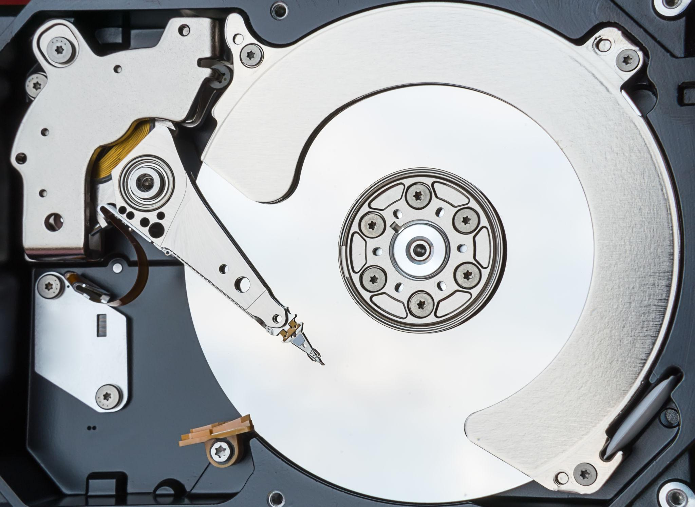 |
1. 傳統機械式硬碟（HDD） 利用高速旋轉的磁性碟片及磁頭讀寫資料。 特點是容量大、每 GB 成本通常較低，適合儲存大量照片、影片及備份資料。 |
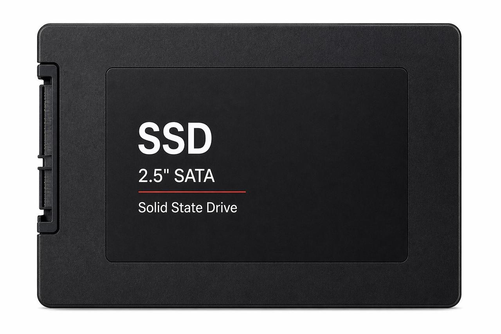 |
2. 固態硬碟（SSD） 使用 NAND 快閃記憶體儲存資料，沒有傳統 HDD 的旋轉碟片。 具有速度快、安靜、抗震性較佳及耗電量通常較低等特色。 |
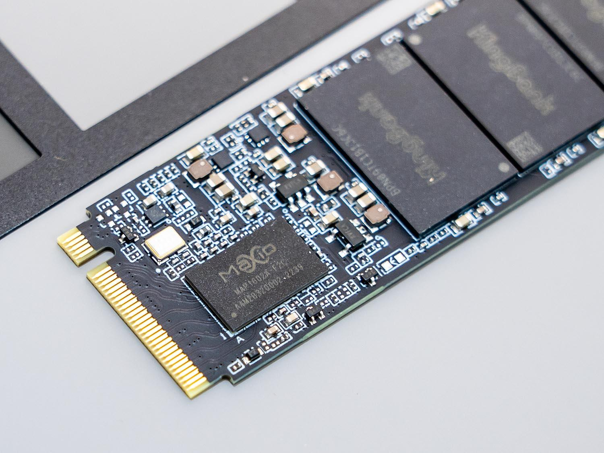 |
3. M.2 NVMe SSD 常見於現代桌上型及筆記型電腦，體積小，可透過 PCIe 介面提供高速資料傳輸。 適合安裝作業系統、大型遊戲及需要高速讀寫的應用程式。 |
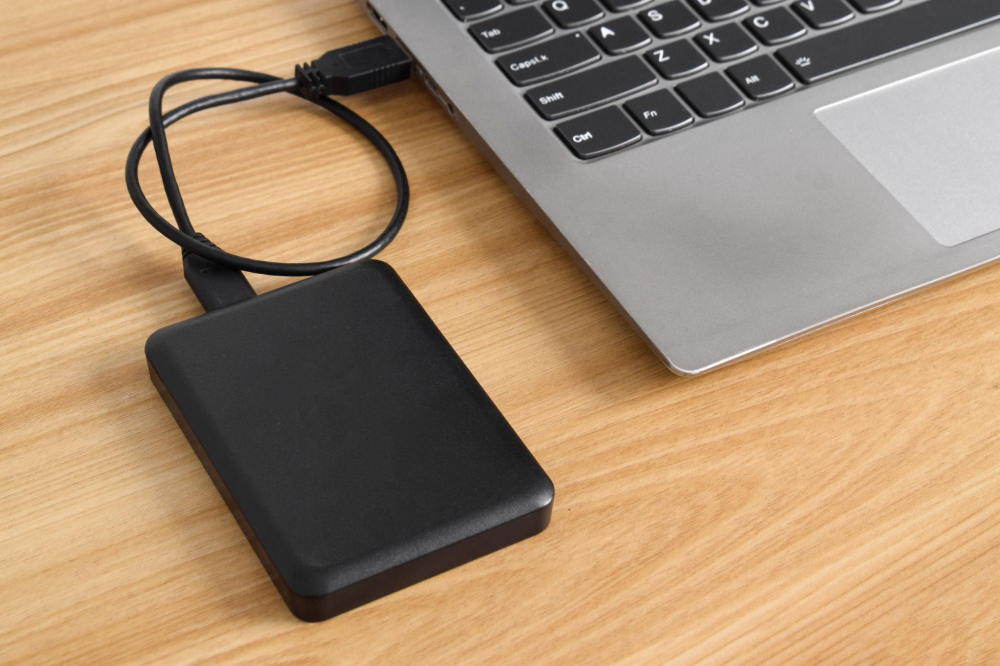 |
4. 外接式硬碟（External Drive） 通常透過 USB 或其他外部介面連接電腦。 方便攜帶，適合資料備份、檔案轉移及擴充儲存空間。 |
四、HDD 的主要構造
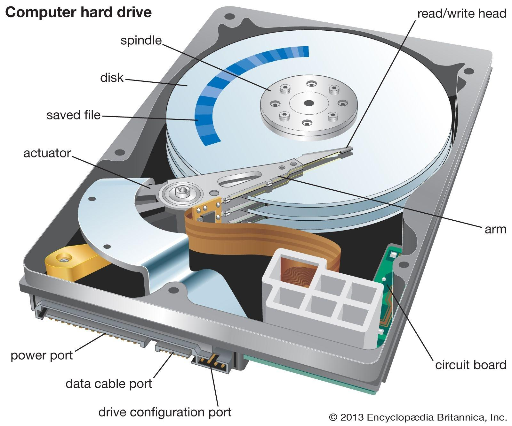
傳統機械式硬碟的主要構造包括：
- 磁性碟片（Platter）：用來儲存資料的圓形碟片。
- 讀寫磁頭（Read/Write Head）：負責讀取或寫入碟片上的磁性資料。
- 主軸馬達（Spindle Motor）：帶動磁性碟片旋轉。
- 磁頭致動臂（Actuator Arm）：控制磁頭移動到指定的資料位置。
- 控制電路板（PCB）：負責管理硬碟運作及資料傳輸。
五、SSD 的主要構造
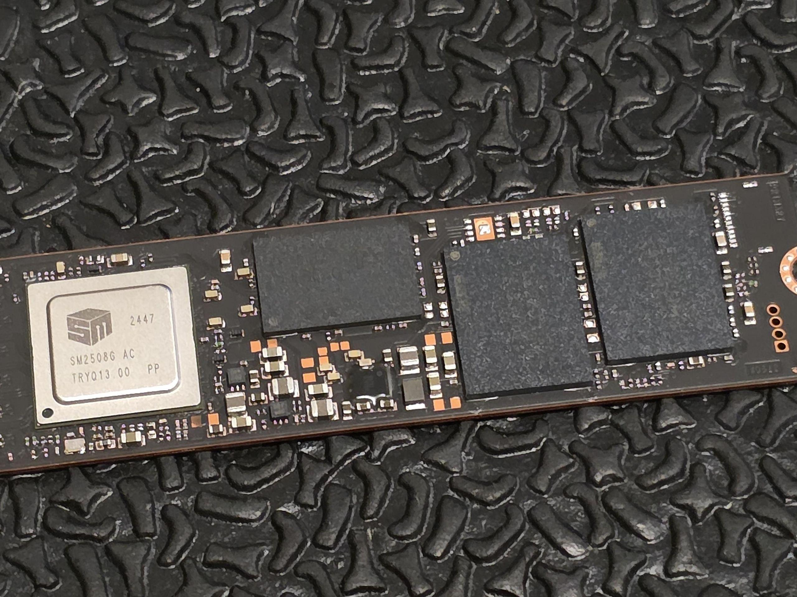
固態硬碟的主要構造包括：
- NAND 快閃記憶體：負責實際儲存資料。
- 控制器（Controller）：管理資料讀寫、錯誤修正及記憶體區塊使用。
- 快取記憶體（Cache）：部分 SSD 配備 DRAM 快取，協助管理資料存取。
- 電路板（PCB）：連接各項電子元件。
- 連接介面：例如 SATA 或 PCIe，用來與電腦進行資料傳輸。
六、HDD 與 SSD 的比較
比較項目 |
HDD 機械式硬碟 |
SSD 固態硬碟 |
|---|---|---|
儲存原理 |
磁性碟片 |
NAND 快閃記憶體 |
讀寫速度 |
較慢 |
較快 |
運作聲音 |
有機械運轉聲 |
幾乎無聲 |
抗震能力 |
較弱 |
通常較佳 |
耗電量 |
通常較高 |
通常較低 |
每 GB 成本 |
較低 |
較高 |
常見用途 |
大量資料儲存、備份 |
系統、遊戲、軟體 |
常見資料傳輸速度比較
以下為概略連續讀取速度範例，並非所有產品的固定速度。
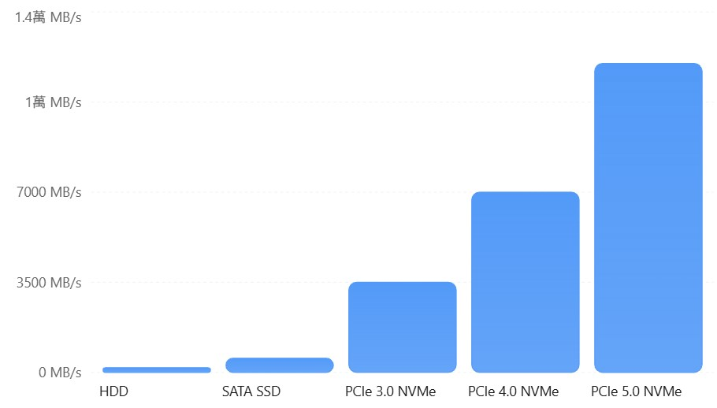
實際速度取決於產品型號、介面、工作負載與測試條件。
SSD 對於電腦開機、程式啟動、檔案載入及大型資料傳輸通常有明顯幫助，但實際使用體驗不一定與連續讀寫速度成正比。
七、硬碟的重要規格
規格 |
說明 |
|---|---|
儲存容量 |
可儲存多少資料，例如 1 TB、2 TB |
讀取速度 |
從硬碟取得資料的速度 |
寫入速度 |
將資料儲存到硬碟的速度 |
連接介面 |
例如 SATA、PCIe |
外型尺寸 |
例如 3.5 吋、2.5 吋、M.2 |
轉速（HDD） |
常見為 5400 RPM、7200 RPM |
TBW（SSD） |
SSD 額定累計寫入耐久度指標 |
常見硬碟容量與用途
容量 |
常見使用需求 |
|---|---|
256 GB |
基本文書、輕量使用 |
512 GB |
一般家用、辦公電腦 |
1 TB |
遊戲、日常工作 |
2 TB |
大型遊戲、照片、影片 |
4 TB 以上 |
大量資料儲存、影片備份 |
八、硬碟的連接方式
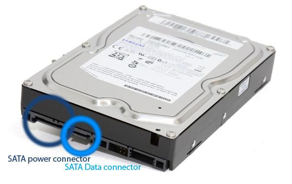 |
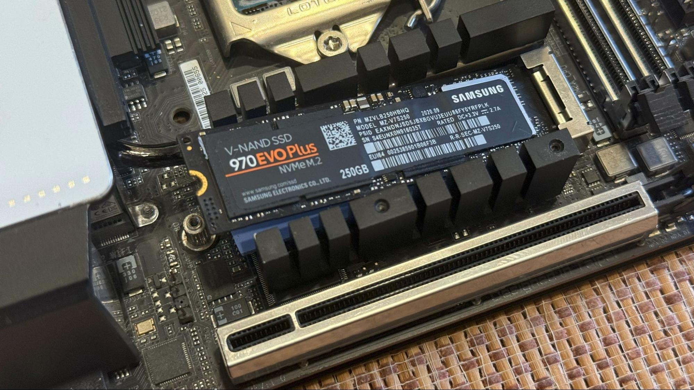 |
1. SATA 介面 常見於 HDD 與 2.5 吋 SSD，透過 SATA 資料線連接主機板，並使用 SATA 電源線供電。 |
2. M.2 介面 SSD 可以直接安裝在主機板的 M.2 插槽，通常不需要額外連接電源線或資料線。 |
需要注意，M.2 是外型與連接規格，不代表一定使用 NVMe。M.2 SSD 也可能採用 SATA 技術，選購時需確認主機板是否相容。
九、選購硬碟的注意事項
- 使用需求： 一般使用、遊戲、影片剪輯及大量資料備份，適合的硬碟規格有所不同。
- 容量大小： 依照作業系統、軟體、遊戲與個人檔案需求選擇。
- 讀寫速度： 經常傳輸大型檔案或執行高負載程式，可考慮 NVMe SSD。
- 主機板相容性： 確認是否支援 SATA、M.2 及對應的 PCIe 規格。
- 散熱需求： 高速 NVMe SSD 在高負載時可能需要散熱片。
- 資料安全： 任何硬碟都有故障風險，重要檔案應定期備份。
十、硬碟與其他硬體的關係
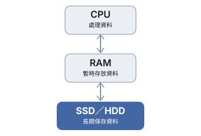
當使用者開啟程式時，電腦會從硬碟讀取所需的程式與資料，將部分內容載入 RAM，再交由 CPU 執行與處理。
包裝內容物
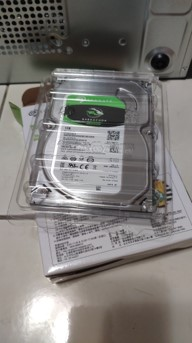
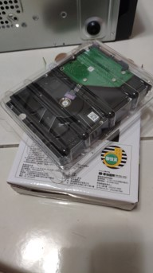